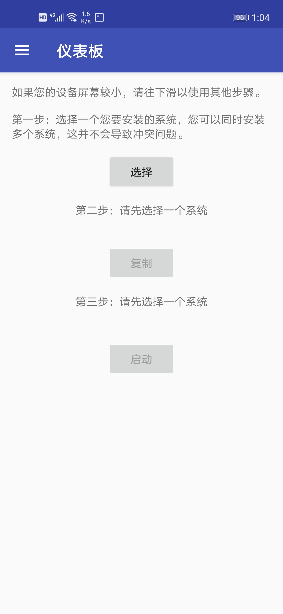
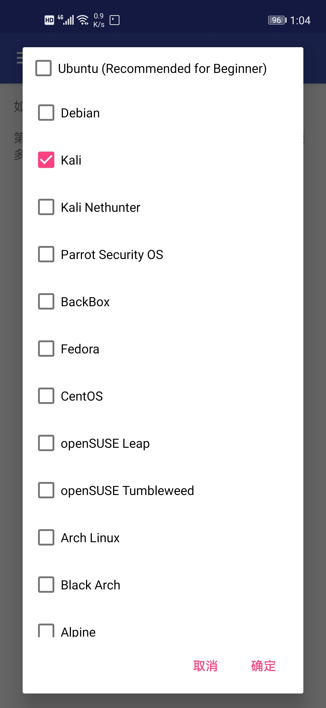
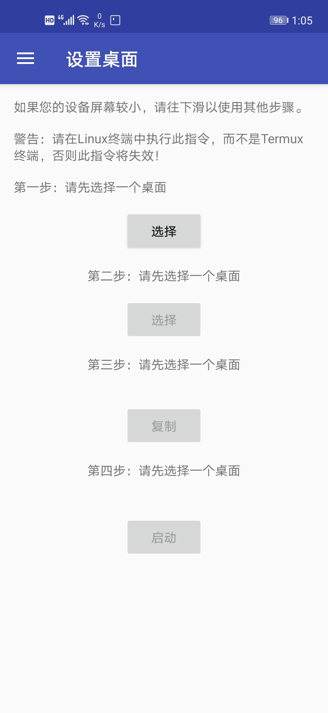
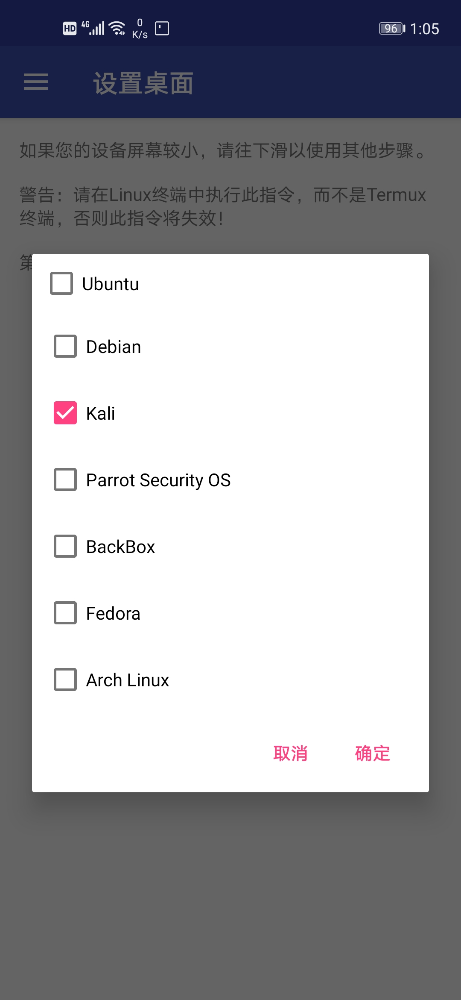
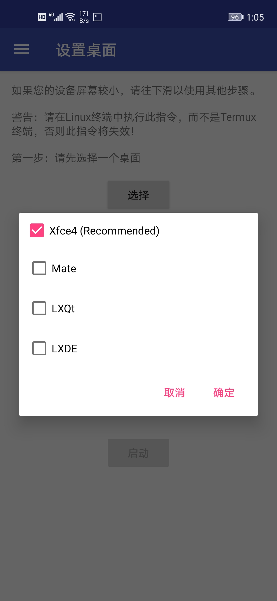

关于如何使用termux安装kali（有桌面）
三月 14, 2020
1、安装anlinux、VNCviewer、termux百度一下
2、打开anlinux，这时这个界面就出现了
3、勾选如图所示框框
4、依次点击复制、启动，然后粘贴到termux中，加载有点慢，需要耐心等待，thanks。
5、安装成功后运行
./startkali.sh
6、从左边滑出一个框框点击桌面
7、然后就会出现这个界面
8、依次点击如图所示 
9、点击复制，再点击启动，在当前界面粘贴，然后回车运行
10、启动服务
11、打开VNCviewer，新建并且运行，你便可以启动kali了！
termux要保持后台运行！
termux要保持后台运行！
termux要保持后台运行！
详细可以联系我QQ：3140230365
我可以免费教你
查看评论